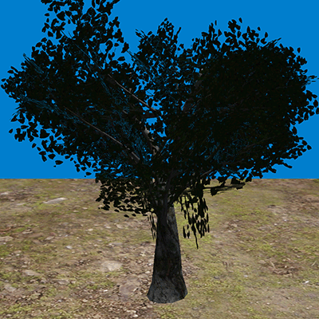
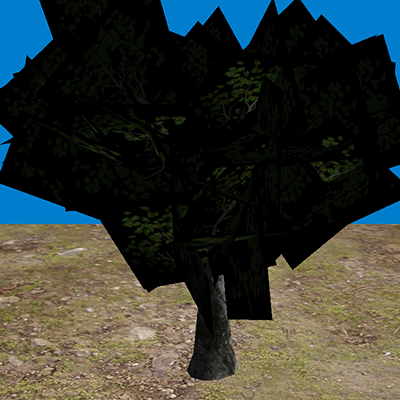
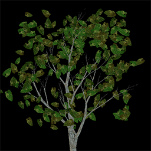
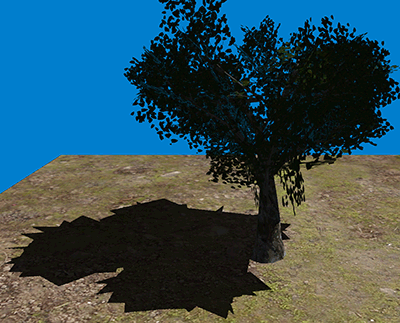
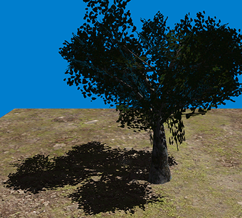
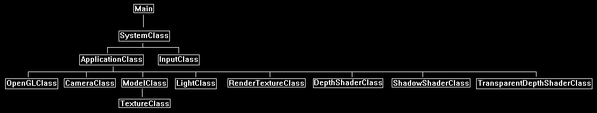

In this tutorial we will go over how to shadow map objects that use textures with alpha transparency.
The code will be written using OpenGL 4.0 and GLSL.
This tutorial will build on the code from the directional shadow maps tutorial 43.
We will start by looking at the classic example of a tree that uses quads for leaves with a transparent leaf texture.

If we turn blending off you can see the quads that form the leaves.

The texture used in this example is the following:

Now this causes an issue with shadow mapping because with the current depth shader it would only have access to the quad geometry and would not have access to the transparency texture.
So, this would cause quads to be drawn as shadows instead of the leaves inside the transparency texture.

To deal with this issue we will need a second depth shader to render transparent objects, it will be the same as the regular depth shader except that we will provide it the transparency texture and discard pixels that are below a certain alpha value.
With this in place we will be able to render shadow maps that use transparency textures.

Framework
The framework is mostly the same as the directional shadow mapping tutorial, except that we have added one additional class named TransparentDepthShaderClass.

We will start the code section by looking at the transparent depth shader.
Transparentdepth.vs
The vertex shader for transparent depth is mostly the same as the regular depth shader.
However, we now additionally send through the texture coordinates into the pixel shader.
////////////////////////////////////////////////////////////////////////////////
// Filename: transparentdepth.vs
////////////////////////////////////////////////////////////////////////////////
#version 400
/////////////////////
// INPUT VARIABLES //
/////////////////////
in vec3 inputPosition;
in vec2 inputTexCoord;
in vec3 inputNormal;
//////////////////////
// OUTPUT VARIABLES //
//////////////////////
out vec4 depthPosition;
out vec2 texCoord;
///////////////////////
// UNIFORM VARIABLES //
///////////////////////
uniform mat4 worldMatrix;
uniform mat4 viewMatrix;
uniform mat4 projectionMatrix;
////////////////////////////////////////////////////////////////////////////////
// Vertex Shader
////////////////////////////////////////////////////////////////////////////////
void main(void)
{
// Calculate the position of the vertex against the world, view, and projection matrices.
gl_Position = vec4(inputPosition, 1.0f) * worldMatrix;
gl_Position = gl_Position * viewMatrix;
gl_Position = gl_Position * projectionMatrix;
// Store the position value in a second input value for depth value calculations.
depthPosition = gl_Position;
// Store the texture coordinates for the pixel shader.
texCoord = inputTexCoord;
}
Transparentdepth.ps
////////////////////////////////////////////////////////////////////////////////
// Filename: transparentdepth.ps
////////////////////////////////////////////////////////////////////////////////
#version 400
/////////////////////
// INPUT VARIABLES //
/////////////////////
in vec4 depthPosition;
The input variables include a texture coordinate component.
in vec2 texCoord;
//////////////////////
// OUTPUT VARIABLES //
//////////////////////
out vec4 outputColor;
///////////////////////
// UNIFORM VARIABLES //
///////////////////////
We have added a texture to the pixel shader.
uniform sampler2D shaderTexture;
////////////////////////////////////////////////////////////////////////////////
// Pixel Shader
////////////////////////////////////////////////////////////////////////////////
void main(void)
{
float depthValue;
vec4 textureColor;
We sample the transparency texture and determine if the alpha value is above a certain value.
If it is above a certain value then this is an opaque pixel that should be part of the shadow, and so we return its depth value.
If it is below that same value then we simply discard the pixel so it is not part of the shadow.
// Sample the pixel color from the texture using the sampler at this texture coordinate location.
textureColor = texture(shaderTexture, texCoord);
// Test based on the alpha value of the texture.
if(textureColor.a > 0.8f)
{
// Get the depth value of the pixel by dividing the Z pixel depth by the homogeneous W coordinate.
depthValue = depthPosition.z / depthPosition.w;
}
else
{
// Otherwise discard this pixel entirely.
discard;
}
outputColor = vec4(depthValue, depthValue, depthValue, 1.0f);
}
Transparentdepthshaderclass.h
The TransparentDepthShaderClass is the same as the DepthShaderClass except that it handles texture data.
////////////////////////////////////////////////////////////////////////////////
// Filename: transparentdepthshaderclass.h
////////////////////////////////////////////////////////////////////////////////
#ifndef _TRANSPARENTDEPTHSHADERCLASS_H_
#define _TRANSPARENTDEPTHSHADERCLASS_H_
//////////////
// INCLUDES //
//////////////
#include <iostream>
using namespace std;
///////////////////////
// MY CLASS INCLUDES //
///////////////////////
#include "openglclass.h"
////////////////////////////////////////////////////////////////////////////////
// Class name: TransparentDepthShaderClass
////////////////////////////////////////////////////////////////////////////////
class TransparentDepthShaderClass
{
public:
TransparentDepthShaderClass();
TransparentDepthShaderClass(const TransparentDepthShaderClass&);
~TransparentDepthShaderClass();
bool Initialize(OpenGLClass*);
void Shutdown();
bool SetShaderParameters(float*, float*, float*);
private:
bool InitializeShader(char*, char*);
void ShutdownShader();
char* LoadShaderSourceFile(char*);
void OutputShaderErrorMessage(unsigned int, char*);
void OutputLinkerErrorMessage(unsigned int);
private:
OpenGLClass* m_OpenGLPtr;
unsigned int m_vertexShader;
unsigned int m_fragmentShader;
unsigned int m_shaderProgram;
};
#endif
Transparentdepthshaderclass.cpp
////////////////////////////////////////////////////////////////////////////////
// Filename: transparentdepthshaderclass.cpp
////////////////////////////////////////////////////////////////////////////////
#include "transparentdepthshaderclass.h"
TransparentDepthShaderClass::TransparentDepthShaderClass()
{
m_OpenGLPtr = 0;
}
TransparentDepthShaderClass::TransparentDepthShaderClass(const TransparentDepthShaderClass& other)
{
}
TransparentDepthShaderClass::~TransparentDepthShaderClass()
{
}
bool TransparentDepthShaderClass::Initialize(OpenGLClass* OpenGL)
{
char vsFilename[128];
char psFilename[128];
bool result;
// Store the pointer to the OpenGL object.
m_OpenGLPtr = OpenGL;
// Set the location and names of the shader files.
strcpy(vsFilename, "../Engine/transparentdepth.vs");
strcpy(psFilename, "../Engine/transparentdepth.ps");
// Initialize the vertex and pixel shaders.
result = InitializeShader(vsFilename, psFilename);
if(!result)
{
return false;
}
return true;
}
void TransparentDepthShaderClass::Shutdown()
{
// Shutdown the shader.
ShutdownShader();
// Release the pointer to the OpenGL object.
m_OpenGLPtr = 0;
return;
}
bool TransparentDepthShaderClass::InitializeShader(char* vsFilename, char* fsFilename)
{
const char* vertexShaderBuffer;
const char* fragmentShaderBuffer;
int status;
// Load the vertex shader source file into a text buffer.
vertexShaderBuffer = LoadShaderSourceFile(vsFilename);
if(!vertexShaderBuffer)
{
return false;
}
// Load the fragment shader source file into a text buffer.
fragmentShaderBuffer = LoadShaderSourceFile(fsFilename);
if(!fragmentShaderBuffer)
{
return false;
}
// Create a vertex and fragment shader object.
m_vertexShader = m_OpenGLPtr->glCreateShader(GL_VERTEX_SHADER);
m_fragmentShader = m_OpenGLPtr->glCreateShader(GL_FRAGMENT_SHADER);
// Copy the shader source code strings into the vertex and fragment shader objects.
m_OpenGLPtr->glShaderSource(m_vertexShader, 1, &vertexShaderBuffer, NULL);
m_OpenGLPtr->glShaderSource(m_fragmentShader, 1, &fragmentShaderBuffer, NULL);
// Release the vertex and fragment shader buffers.
delete [] vertexShaderBuffer;
vertexShaderBuffer = 0;
delete [] fragmentShaderBuffer;
fragmentShaderBuffer = 0;
// Compile the shaders.
m_OpenGLPtr->glCompileShader(m_vertexShader);
m_OpenGLPtr->glCompileShader(m_fragmentShader);
// Check to see if the vertex shader compiled successfully.
m_OpenGLPtr->glGetShaderiv(m_vertexShader, GL_COMPILE_STATUS, &status);
if(status != 1)
{
// If it did not compile then write the syntax error message out to a text file for review.
OutputShaderErrorMessage(m_vertexShader, vsFilename);
return false;
}
// Check to see if the fragment shader compiled successfully.
m_OpenGLPtr->glGetShaderiv(m_fragmentShader, GL_COMPILE_STATUS, &status);
if(status != 1)
{
// If it did not compile then write the syntax error message out to a text file for review.
OutputShaderErrorMessage(m_fragmentShader, fsFilename);
return false;
}
// Create a shader program object.
m_shaderProgram = m_OpenGLPtr->glCreateProgram();
// Attach the vertex and fragment shader to the program object.
m_OpenGLPtr->glAttachShader(m_shaderProgram, m_vertexShader);
m_OpenGLPtr->glAttachShader(m_shaderProgram, m_fragmentShader);
// Bind the shader input variables.
m_OpenGLPtr->glBindAttribLocation(m_shaderProgram, 0, "inputPosition");
m_OpenGLPtr->glBindAttribLocation(m_shaderProgram, 1, "inputTexCoord");
m_OpenGLPtr->glBindAttribLocation(m_shaderProgram, 2, "inputNormal");
// Link the shader program.
m_OpenGLPtr->glLinkProgram(m_shaderProgram);
// Check the status of the link.
m_OpenGLPtr->glGetProgramiv(m_shaderProgram, GL_LINK_STATUS, &status);
if(status != 1)
{
// If it did not link then write the syntax error message out to a text file for review.
OutputLinkerErrorMessage(m_shaderProgram);
return false;
}
return true;
}
void TransparentDepthShaderClass::ShutdownShader()
{
// Detach the vertex and fragment shaders from the program.
m_OpenGLPtr->glDetachShader(m_shaderProgram, m_vertexShader);
m_OpenGLPtr->glDetachShader(m_shaderProgram, m_fragmentShader);
// Delete the vertex and fragment shaders.
m_OpenGLPtr->glDeleteShader(m_vertexShader);
m_OpenGLPtr->glDeleteShader(m_fragmentShader);
// Delete the shader program.
m_OpenGLPtr->glDeleteProgram(m_shaderProgram);
return;
}
char* TransparentDepthShaderClass::LoadShaderSourceFile(char* filename)
{
FILE* filePtr;
char* buffer;
long fileSize, count;
int error;
// Open the shader file for reading in text modee.
filePtr = fopen(filename, "r");
if(filePtr == NULL)
{
return 0;
}
// Go to the end of the file and get the size of the file.
fseek(filePtr, 0, SEEK_END);
fileSize = ftell(filePtr);
// Initialize the buffer to read the shader source file into, adding 1 for an extra null terminator.
buffer = new char[fileSize + 1];
// Return the file pointer back to the beginning of the file.
fseek(filePtr, 0, SEEK_SET);
// Read the shader text file into the buffer.
count = fread(buffer, 1, fileSize, filePtr);
if(count != fileSize)
{
return 0;
}
// Close the file.
error = fclose(filePtr);
if(error != 0)
{
return 0;
}
// Null terminate the buffer.
buffer[fileSize] = '\0';
return buffer;
}
void TransparentDepthShaderClass::OutputShaderErrorMessage(unsigned int shaderId, char* shaderFilename)
{
long count;
int logSize, error;
char* infoLog;
FILE* filePtr;
// Get the size of the string containing the information log for the failed shader compilation message.
m_OpenGLPtr->glGetShaderiv(shaderId, GL_INFO_LOG_LENGTH, &logSize);
// Increment the size by one to handle also the null terminator.
logSize++;
// Create a char buffer to hold the info log.
infoLog = new char[logSize];
// Now retrieve the info log.
m_OpenGLPtr->glGetShaderInfoLog(shaderId, logSize, NULL, infoLog);
// Open a text file to write the error message to.
filePtr = fopen("shader-error.txt", "w");
if(filePtr == NULL)
{
cout << "Error opening shader error message output file." << endl;
return;
}
// Write out the error message.
count = fwrite(infoLog, sizeof(char), logSize, filePtr);
if(count != logSize)
{
cout << "Error writing shader error message output file." << endl;
return;
}
// Close the file.
error = fclose(filePtr);
if(error != 0)
{
cout << "Error closing shader error message output file." << endl;
return;
}
// Notify the user to check the text file for compile errors.
cout << "Error compiling shader. Check shader-error.txt for error message. Shader filename: " << shaderFilename << endl;
return;
}
void TransparentDepthShaderClass::OutputLinkerErrorMessage(unsigned int programId)
{
long count;
FILE* filePtr;
int logSize, error;
char* infoLog;
// Get the size of the string containing the information log for the failed shader compilation message.
m_OpenGLPtr->glGetProgramiv(programId, GL_INFO_LOG_LENGTH, &logSize);
// Increment the size by one to handle also the null terminator.
logSize++;
// Create a char buffer to hold the info log.
infoLog = new char[logSize];
// Now retrieve the info log.
m_OpenGLPtr->glGetProgramInfoLog(programId, logSize, NULL, infoLog);
// Open a file to write the error message to.
filePtr = fopen("linker-error.txt", "w");
if(filePtr == NULL)
{
cout << "Error opening linker error message output file." << endl;
return;
}
// Write out the error message.
count = fwrite(infoLog, sizeof(char), logSize, filePtr);
if(count != logSize)
{
cout << "Error writing linker error message output file." << endl;
return;
}
// Close the file.
error = fclose(filePtr);
if(error != 0)
{
cout << "Error closing linker error message output file." << endl;
return;
}
// Pop a message up on the screen to notify the user to check the text file for linker errors.
cout << "Error linking shader program. Check linker-error.txt for message." << endl;
return;
}
bool TransparentDepthShaderClass::SetShaderParameters(float* worldMatrix, float* viewMatrix, float* projectionMatrix)
{
float tpWorldMatrix[16], tpViewMatrix[16], tpProjectionMatrix[16];
int location;
// Transpose the matrices to prepare them for the shader.
m_OpenGLPtr->MatrixTranspose(tpWorldMatrix, worldMatrix);
m_OpenGLPtr->MatrixTranspose(tpViewMatrix, viewMatrix);
m_OpenGLPtr->MatrixTranspose(tpProjectionMatrix, projectionMatrix);
// Install the shader program as part of the current rendering state.
m_OpenGLPtr->glUseProgram(m_shaderProgram);
// Set the world matrix in the vertex shader.
location = m_OpenGLPtr->glGetUniformLocation(m_shaderProgram, "worldMatrix");
if(location == -1)
{
cout << "World matrix not set." << endl;
}
m_OpenGLPtr->glUniformMatrix4fv(location, 1, false, tpWorldMatrix);
// Set the view matrix in the vertex shader.
location = m_OpenGLPtr->glGetUniformLocation(m_shaderProgram, "viewMatrix");
if(location == -1)
{
cout << "View matrix not set." << endl;
}
m_OpenGLPtr->glUniformMatrix4fv(location, 1, false, tpViewMatrix);
// Set the projection matrix in the vertex shader.
location = m_OpenGLPtr->glGetUniformLocation(m_shaderProgram, "projectionMatrix");
if(location == -1)
{
cout << "Projection matrix not set." << endl;
}
m_OpenGLPtr->glUniformMatrix4fv(location, 1, false, tpProjectionMatrix);
The transparent depth shader will use the alpha channel of the input texture to determine if a pixel should be shadowed or not.
// Set the texture in the pixel shader to use the data from the first texture unit.
location = m_OpenGLPtr->glGetUniformLocation(m_shaderProgram, "shaderTexture");
if(location == -1)
{
cout << "Shader texture not set." << endl;
}
m_OpenGLPtr->glUniform1i(location, 0);
return true;
}
Applicationclass.h
////////////////////////////////////////////////////////////////////////////////
// Filename: applicationclass.h
////////////////////////////////////////////////////////////////////////////////
#ifndef _APPLICATIONCLASS_H_
#define _APPLICATIONCLASS_H_
/////////////
// GLOBALS //
/////////////
const bool FULL_SCREEN = false;
const bool VSYNC_ENABLED = true;
const float SCREEN_NEAR = 0.3f;
const float SCREEN_DEPTH = 1000.0f;
const int SHADOWMAP_WIDTH = 1024;
const int SHADOWMAP_HEIGHT = 1024;
const float SHADOWMAP_DEPTH = 50.0f;
const float SHADOWMAP_NEAR = 1.0f;
///////////////////////
// MY CLASS INCLUDES //
///////////////////////
#include "inputclass.h"
#include "openglclass.h"
#include "cameraclass.h"
#include "modelclass.h"
#include "lightclass.h"
#include "rendertextureclass.h"
#include "depthshaderclass.h"
#include "transparentdepthshaderclass.h"
#include "shadowshaderclass.h"
////////////////////////////////////////////////////////////////////////////////
// Class Name: ApplicationClass
////////////////////////////////////////////////////////////////////////////////
class ApplicationClass
{
public:
ApplicationClass();
ApplicationClass(const ApplicationClass&);
~ApplicationClass();
bool Initialize(Display*, Window, int, int);
void Shutdown();
bool Frame(InputClass*);
private:
bool RenderSceneToTexture();
bool Render();
private:
OpenGLClass* m_OpenGL;
CameraClass* m_Camera;
ModelClass* m_GroundModel;
We have added a model for the tree which will be split into two parts for rendering purposes (opaque trunk part and transparent leaf part).
ModelClass *m_TreeTrunkModel, *m_TreeLeafModel;
LightClass* m_Light;
RenderTextureClass* m_RenderTexture;
DepthShaderClass* m_DepthShader;
The new transparent depth shader object is added here.
TransparentDepthShaderClass* m_TransparentDepthShader;
ShadowShaderClass* m_ShadowShader;
float m_shadowMapBias;
};
#endif
Applicationclass.cpp
////////////////////////////////////////////////////////////////////////////////
// Filename: applicationclass.cpp
////////////////////////////////////////////////////////////////////////////////
#include "applicationclass.h"
We initialize the new class objects to null in the class constructor.
ApplicationClass::ApplicationClass()
{
m_OpenGL = 0;
m_Camera = 0;
m_GroundModel = 0;
m_TreeTrunkModel = 0;
m_TreeLeafModel = 0;
m_Light = 0;
m_RenderTexture = 0;
m_DepthShader = 0;
m_TransparentDepthShader = 0;
m_ShadowShader = 0;
}
ApplicationClass::ApplicationClass(const ApplicationClass& other)
{
}
ApplicationClass::~ApplicationClass()
{
}
bool ApplicationClass::Initialize(Display* display, Window win, int screenWidth, int screenHeight)
{
char modelFilename[128], textureFilename[128];
bool result;
// Create and initialize the OpenGL object.
m_OpenGL = new OpenGLClass;
result = m_OpenGL->Initialize(display, win, screenWidth, screenHeight, SCREEN_NEAR, SCREEN_DEPTH, VSYNC_ENABLED);
if(!result)
{
cout << "Error: Could not initialize the OpenGL object." << endl;
return false;
}
// Create and initialize the camera object.
m_Camera = new CameraClass;
m_Camera->SetPosition(0.0f, 7.0f, -11.0f);
m_Camera->SetRotation(20.0f, 0.0f, 0.0f);
m_Camera->Render();
The ground model now uses the dirt texture for this tutorial.
// Create and initialize the ground model object.
m_GroundModel = new ModelClass;
strcpy(modelFilename, "../Engine/data/plane01.txt");
strcpy(textureFilename, "../Engine/data/dirt01.tga");
result = m_GroundModel->Initialize(m_OpenGL, modelFilename, textureFilename, false, NULL, false, NULL, false);
if(!result)
{
cout << "Error: Could not initialize the ground model object." << endl;
return false;
}
This is where we setup the opaque tree trunk part of the model.
// Create and initialize the tree trunk model object.
m_TreeTrunkModel = new ModelClass;
strcpy(modelFilename, "../Engine/data/trunk001.txt");
strcpy(textureFilename, "../Engine/data/trunk001.tga");
result = m_TreeTrunkModel->Initialize(m_OpenGL, modelFilename, textureFilename, true, NULL, false, NULL, false);
if(!result)
{
cout << "Error: Could not initialize the tree trunk model object." << endl;
return false;
}
This is where we setup the transparent tree leaf part of the model.
// Create and initialize the tree leaf model object.
m_TreeLeafModel = new ModelClass;
strcpy(modelFilename, "../Engine/data/leaf001.txt");
strcpy(textureFilename, "../Engine/data/leaf001.tga");
result = m_TreeLeafModel->Initialize(m_OpenGL, modelFilename, textureFilename, true, NULL, false, NULL, false);
if(!result)
{
cout << "Error: Could not initialize the tree leaf model object." << endl;
return false;
}
// Create and initialize the light object.
m_Light = new LightClass;
m_Light->SetAmbientLight(0.15f, 0.15f, 0.15f, 1.0f);
m_Light->SetDiffuseColor(1.0f, 1.0f, 1.0f, 1.0f);
We try to generate a fairly tight shadow mapping area around the scene to increase the detail of the shadow map.
For this tutorial roughly 20.0f is just outside the boundaries of the ground model.
m_Light->GenerateOrthoMatrix(20.0f, SHADOWMAP_NEAR, SHADOWMAP_DEPTH);
// Create and initialize the render to texture object.
m_RenderTexture = new RenderTextureClass;
result = m_RenderTexture->Initialize(m_OpenGL, SHADOWMAP_WIDTH, SHADOWMAP_HEIGHT, SHADOWMAP_NEAR, SHADOWMAP_DEPTH, 0);
if(!result)
{
cout << "Error: Could not initialize the render texture object." << endl;
return false;
}
// Create and initialize the depth shader object.
m_DepthShader = new DepthShaderClass;
result = m_DepthShader->Initialize(m_OpenGL);
if(!result)
{
cout << "Error: Could not initialize the depth shader object." << endl;
return false;
}
Here we initialize and create the new transparent depth shader class object.
// Create and initialize the transparent depth shader object.
m_TransparentDepthShader = new TransparentDepthShaderClass;
result = m_TransparentDepthShader->Initialize(m_OpenGL);
if(!result)
{
cout << "Error: Could not initialize the transparent depth shader object." << endl;
return false;
}
// Create and initialize the shadow shader object.
m_ShadowShader = new ShadowShaderClass;
result = m_ShadowShader->Initialize(m_OpenGL);
if(!result)
{
cout << "Error: Could not initialize the shadow shader object." << endl;
return false;
}
// Set the shadow map bias to fix the floating point precision issues (shadow acne/lines artifacts).
m_shadowMapBias = 0.0022f;
return true;
}
We release the new class objects in the Shutdown function.
void ApplicationClass::Shutdown()
{
// Release the shadow shader object.
if(m_ShadowShader)
{
m_ShadowShader->Shutdown();
delete m_ShadowShader;
m_ShadowShader = 0;
}
// Release the transparent depth object.
if(m_TransparentDepthShader)
{
m_TransparentDepthShader->Shutdown();
delete m_TransparentDepthShader;
m_TransparentDepthShader = 0;
}
// Release the depth shader object.
if(m_DepthShader)
{
m_DepthShader->Shutdown();
delete m_DepthShader;
m_DepthShader = 0;
}
// Release the render texture object.
if(m_RenderTexture)
{
m_RenderTexture->Shutdown();
delete m_RenderTexture;
m_RenderTexture = 0;
}
// Release the light object.
if(m_Light)
{
delete m_Light;
m_Light = 0;
}
// Release the tree leaf model object.
if(m_TreeLeafModel)
{
m_TreeLeafModel->Shutdown();
delete m_TreeLeafModel;
m_TreeLeafModel = 0;
}
// Release the tree trunk model object.
if(m_TreeTrunkModel)
{
m_TreeTrunkModel->Shutdown();
delete m_TreeTrunkModel;
m_TreeTrunkModel = 0;
}
// Release the ground model object.
if(m_GroundModel)
{
m_GroundModel->Shutdown();
delete m_GroundModel;
m_GroundModel = 0;
}
// Release the camera object.
if(m_Camera)
{
delete m_Camera;
m_Camera = 0;
}
// Release the OpenGL object.
if(m_OpenGL)
{
m_OpenGL->Shutdown();
delete m_OpenGL;
m_OpenGL = 0;
}
return;
}
bool ApplicationClass::Frame(InputClass* Input)
{
static float lightAngle = 270.0f;
static float lightPosX = 9.0f;
float radians;
float frameTime;
bool result;
// Check if the escape key has been pressed, if so quit.
if(Input->IsEscapePressed() == true)
{
return false;
}
// Set the frame time manually assumming 60 fps.
frameTime = 10.0f;
// Update the position of the light each frame.
lightPosX -= 0.003f * frameTime;
// Update the angle of the light each frame.
lightAngle -= 0.03f * frameTime;
if(lightAngle < 90.0f)
{
lightAngle = 270.0f;
// Reset the light position also.
lightPosX = 9.0f;
}
radians = lightAngle * 0.0174532925f;
// Update the direction of the light.
m_Light->SetDirection(sinf(radians), cosf(radians), 0.0f);
// Set the position and lookat for the light.
m_Light->SetPosition(lightPosX, 10.0f, 1.0f);
m_Light->SetLookAt(-lightPosX, 0.0f, 2.0f);
m_Light->GenerateViewMatrix();
// Render the scene depth to the render texture.
result = RenderSceneToTexture();
if(!result)
{
return false;
}
// Render the final graphics scene.
result = Render();
if(!result)
{
return false;
}
return true;
}
bool ApplicationClass::RenderSceneToTexture()
{
float worldMatrix[16], lightViewMatrix[16], lightOrthoMatrix[16], translateMatrix[16], scaleMatrix[16];
bool result;
// Set the render target to be the render texture and clear it.
m_RenderTexture->SetRenderTarget();
m_RenderTexture->ClearRenderTarget(0.0f, 0.0f, 0.0f, 1.0f);
// Get the view and ortho matrices from the light object.
m_Light->GetViewMatrix(lightViewMatrix);
m_Light->GetOrthoMatrix(lightOrthoMatrix);
// Setup the translation matrix for the tree model.
m_OpenGL->MatrixScale(scaleMatrix, 0.1f, 0.1f, 0.1f);
m_OpenGL->MatrixTranslation(translateMatrix, 0.0f, 1.0f, 0.0f);
m_OpenGL->MatrixMultiply(worldMatrix, scaleMatrix, translateMatrix);
First render the opaque parts of the trunk (trunk and branches) using the regular depth shader.
// Render the tree trunk with the depth shader.
result = m_DepthShader->SetShaderParameters(worldMatrix, lightViewMatrix, lightOrthoMatrix);
if(!result)
{
return false;
}
m_TreeTrunkModel->Render();
Here is the key part!
We render the transparent parts of the tree using the transparent depth shader and the transparency texture onto the same render to texture object.
// Render the tree leaves using the depth transparency shader.
result = m_TransparentDepthShader->SetShaderParameters(worldMatrix, lightViewMatrix, lightOrthoMatrix);
if(!result)
{
return false;
}
m_TreeLeafModel->SetTexture1(0);
m_TreeLeafModel->Render();
And finally render the ground model as normal using the regular depth shader.
// Setup the translation matrix for the ground model.
m_OpenGL->MatrixScale(scaleMatrix, 2.0f, 2.0f, 2.0f);
m_OpenGL->MatrixTranslation(translateMatrix, 0.0f, 1.0f, 0.0f);
m_OpenGL->MatrixMultiply(worldMatrix, scaleMatrix, translateMatrix);
// Render the ground model using the depth shader.
result = m_DepthShader->SetShaderParameters(worldMatrix, lightViewMatrix, lightOrthoMatrix);
if(!result)
{
return false;
}
m_GroundModel->Render();
// Reset the render target back to the original back buffer and not the render to texture anymore. And reset the viewport back to the original.
m_OpenGL->SetBackBufferRenderTarget();
m_OpenGL->ResetViewport();
return true;
}
bool ApplicationClass::Render()
{
float worldMatrix[16], viewMatrix[16], projectionMatrix[16], lightViewMatrix[16], lightOrthoMatrix[16], scaleMatrix[16], translateMatrix[16];
float diffuseColor[4], ambientColor[4], lightDirection[3];
bool result;
// Clear the buffers to begin the scene.
m_OpenGL->BeginScene(0.0f, 0.5f, 0.8f, 1.0f);
// Get the world, view, and projection matrices from the opengl and camera objects.
m_OpenGL->GetWorldMatrix(worldMatrix);
m_Camera->GetViewMatrix(viewMatrix);
m_OpenGL->GetProjectionMatrix(projectionMatrix);
// Get the view and ortho matrices from the light object.
m_Light->GetViewMatrix(lightViewMatrix);
m_Light->GetOrthoMatrix(lightOrthoMatrix);
// Get the light properties.
m_Light->GetAmbientLight(ambientColor);
m_Light->GetDiffuseColor(diffuseColor);
m_Light->GetDirection(lightDirection);
The ground model is rendered with the shadow shader as normal.
// Setup the translation matrix for the ground model.
m_OpenGL->MatrixScale(scaleMatrix, 2.0f, 2.0f, 2.0f);
m_OpenGL->MatrixTranslation(translateMatrix, 0.0f, 1.0f, 0.0f);
m_OpenGL->MatrixMultiply(worldMatrix, scaleMatrix, translateMatrix);
// Set the shadow shader as the current shader program and set the parameters that it will use for rendering.
result = m_ShadowShader->SetShaderParameters(worldMatrix, viewMatrix, projectionMatrix, lightViewMatrix, lightOrthoMatrix,
diffuseColor, ambientColor, lightDirection, m_shadowMapBias);
if(!result)
{
return false;
}
// Set the textures that the shadow pixel shader will use.
m_GroundModel->SetTexture1(0);
m_RenderTexture->SetTexture(1);
// Render the ground model.
m_GroundModel->Render();
The tree model is rendered in two parts using the regular shadow shader.
First the opaque parts are drawn, and then the transparent parts are drawn after that.
However, when we render the transparent parts, we enable alpha blending for the transparent shadows to work to complete the effect.
// Translate to the position of the tree model.
m_OpenGL->MatrixScale(scaleMatrix, 0.1f, 0.1f, 0.1f);
m_OpenGL->MatrixTranslation(translateMatrix, 0.0f, 1.0f, 0.0f);
m_OpenGL->MatrixMultiply(worldMatrix, scaleMatrix, translateMatrix);
// Set the shadow shader as the current shader program and set the parameters that it will use for rendering.
result = m_ShadowShader->SetShaderParameters(worldMatrix, viewMatrix, projectionMatrix, lightViewMatrix, lightOrthoMatrix,
diffuseColor, ambientColor, lightDirection, m_shadowMapBias);
if(!result)
{
return false;
}
// Set the textures that the shadow pixel shader will use.
m_TreeTrunkModel->SetTexture1(0);
m_RenderTexture->SetTexture(1);
// Render the tree trunk model.
m_TreeTrunkModel->Render();
// Enable blending for rendering the tree leaves as it uses alpha transparency.
m_OpenGL->EnableAlphaBlending();
// Set the shadow shader as the current shader program and set the parameters that it will use for rendering.
result = m_ShadowShader->SetShaderParameters(worldMatrix, viewMatrix, projectionMatrix, lightViewMatrix, lightOrthoMatrix,
diffuseColor, ambientColor, lightDirection, m_shadowMapBias);
if(!result)
{
return false;
}
// Set the textures that the shadow pixel shader will use.
m_TreeLeafModel->SetTexture1(0);
m_RenderTexture->SetTexture(1);
// Render the tree leaf model.
m_TreeLeafModel->Render();
// Disable the alpha blending.
m_OpenGL->DisableAlphaBlending();
// Present the rendered scene to the screen.
m_OpenGL->EndScene();
return true;
}
Summary
With a transparent depth shader, we can now use transparency textures with our shadow maps.
To Do Exercises
1. Recompile and run the program.
2. Create your own model with transparency textures and render it using this method.
Source Code
Source Code and Data Files: gl4linuxtut45_src.tar.gz